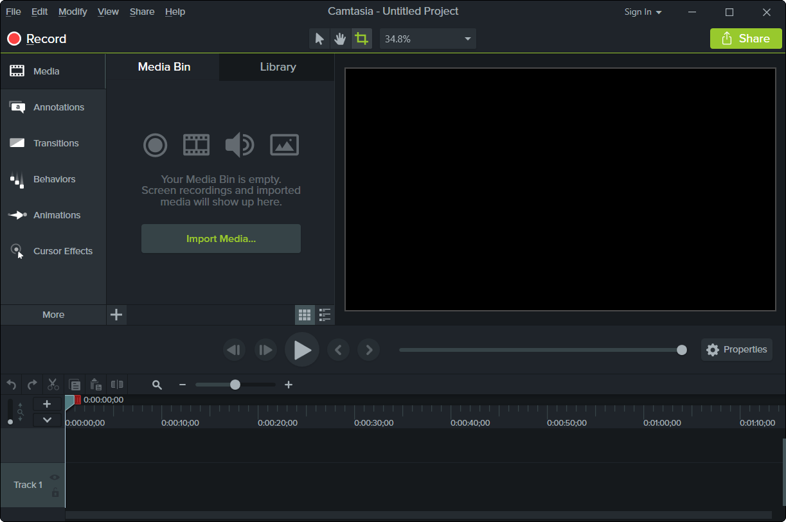

Camtasia Studio es un programa que sirve para grabar lo que sucede en la pantalla del ordenador y de esa manera crear presentaciones y tutoriales visuales.
Las presentaciones visuales siempre son más llamativas que las presentaciones por palabras. Con Camtasia Studio podrás crear presentaciones visuales de manera sencilla y fácil. Con presionar el botón de grabación sera suficiente para que Camtasia Studio comience a grabar lo que sucede en la pantalla del PC. De esta manera puedes grabar tutoriales explicando la utilización de una herramienta o aplicación. Incluso puedes grabar los vídeos que visualizas vía Web o vía Messenger.
Todo lo que sucede en tu pantalla puede ser grabado por Camtasia Studio.
El menú de interacción de Camtasia Studio es el siguiente:

(Desde aquí podremos acceder a todas las opciones disponibles)